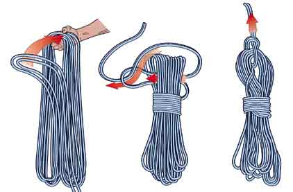

Braid
Over and Under aka Flip Coiling aka "Roadie Wrap"
Butterfly Coil
Grab the end of your rope in your left hand, and extend your left arm away from your body somewhat. Open your left hand, palm up and thumb away from you with the rope lying across your palm.
Now, use your right hand to gather a loop of rope. I keep loops the same size by extending my right arm each time, but you can reduce the size of each loop if you prefer. Once you've gathered a loop with your right hand, lay it into your left hand. Once you've gathered a couple of loops you'll probably need to begin gripping the coils with your left hand to avoid dropping the loops.
Now, here's a little hint. As you lay each new loop into your left hand, twist the rope slightly between your forefinger and thumb. It's only a slight twist, and most twisted rope will actually "show" you how to twist it. If it resists, try the other way. You'll find that your otherwise stiff and unruly rope falls neatly into place.
What about braided line? It's a little different. You may have noticed that braided ropes, for their many merits, also have a propensity to tangle more readily than twisted ropes. Fortunately, you can help minimize the chance of tangles if you alternate your twists so that each new loop gets subtly twisted in the opposite direction. Since braided rope is much more pliable and has less "memory", you'll find that it's pretty easy to do this. But it does take paying a little attention.
Rope will uncoil like a serpent in the sun months or even years after being coiled and stored properly.

Mountaineer's Coil or Alpine Coil
See the Alpine Coil at Wikipedia. Can be prone to tangles and kinks, but ok for short ropes.